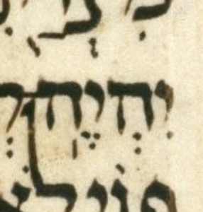
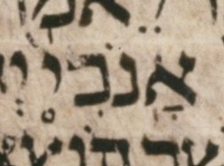
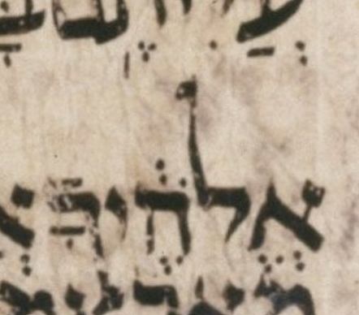
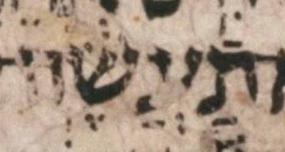
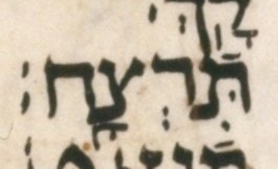

WLC, like the LC itself, has three dually-cantillated prose passages: the two Decalogues (Exodus 20, Deuteronomy 5) and the Reuben/Bilhah verse (Genesis 35:22). Before attempting to grammar-check one of these passages we detangle it into its two single-cantillation strands, guided by MAM’s strands. After detangling a passage, we feed each strand’s chanted verses to the ordinary prose accent grammar checker. The accents checked are WLC’s own, except for the cases described below.
Sometimes WLC leaves a word without an accent in one strand. In these cases, the detangler supplies that one accent from MAM, making that strand’s chanted verse grammatical. These charitably-supplied accents are recorded below. This is a third kind of charity, distinct from the two reinterpretations on the almost-errors page: those reinterpret the type of geresh present in WLC, whereas a supplied mark adds a mark not present in WLC.
A verse with a supplied mark parses cleanly, so it is listed here since it will not be listed among the ungrammatical verses. One verse, Deuteronomy 5:8, gets a supplied accent that fixes the taḥton strand, but the elyon strand’s accent is ungrammatical. Therefore, the beleaguered word of that verse is listed both here and among the ungrammatical verses.
Exodus 20:3, taḥton: the detangler supplies merkha (U+05A5)
WLC has only the elyon strand here (ending in maqaf, carrying a meteg, with no accent of its own), so the taḥton's merkha is supplied from MAM.
WLC’s lone mark here is itself a meteg — a valid mark for the elyon — so supplying the taḥton’s merkha contradicts nothing WLC has: a clean charity.
Supplied from MAM: MAM’s יהי֥ה; WLC has יהיה (no accent of its own).

Deuter 5:6, elyon: the detangler supplies tipeḥa (U+0596)
WLC has only the taḥton strand here (pashta (U+0599)), so the elyon's tipeḥa is supplied from MAM.
Supplied from MAM: MAM’s אנכ֖י; WLC has אנכי֙.

Deuter 5:6, elyon: the detangler supplies atnaḥ (U+0591)
WLC has only the taḥton strand here (zaqef qatan (U+0594)), so the elyon's atnaḥ is supplied from MAM.
Supplied from MAM: MAM’s אלה֑יך; WLC has אלה֔יך.

Deuter 5:8, taḥton: the detangler supplies qadma (U+05A8)
WLC has a merkha (U+05A5) here that belongs to the elyon strand (where it mis-transcribes a meteg); the taḥton's own qadma is omitted by WLC and supplied from MAM.
WLC’s lone mark here is not a meteg but a real merkha, and it belongs to the elyon, where only a meteg is due. The LC is in poor shape at this word (see the image): a better transcription reads that faint, broken vertical line as a meteg and adds the qadma the taḥton is due — the consensus pointing, under which both strands parse.
So the detangler supplies the taḥton’s qadma (and the taḥton then parses clean), but lets WLC’s merkha stand in the elyon, where it surfaces as an ungrammatical verse in the checker run. UXLC, too, corrects the merkha to a meteg, but supplies a pashta rather than the due qadma; a pending UXLC change would correct that pashta to the qadma.
Supplied from LC (non-definitive): MAM’s תעש֨ה; WLC has תעש֥ה.

Deuter 5:17, taḥton: the detangler supplies tipeḥa (U+0596)
WLC ends a chanted verse here in the elyon strand (silluq + sof pasuq), so the taḥton's continuing tipeḥa is supplied from MAM.
Supplied from MAM: MAM’s תרצ֖ח; WLC has תרצח (no accent of its own).

Detangling also re-joins atoms into chanted words. Each strand’s maqaf marks (or lack thereof, i.e. spaces) are taken from MAM, so, relative to WLC’s tangled form, the checker both adds and removes maqaf marks. (WLC has a mix of the two strands’ maqaf marks; it is not simply “maqaf-maximalist”.) A similar situation exists for sof pasuq marks. (Narrow-sense paseq is not part of the accent grammar, so it is not tracked.) The 32 additions and erasures are itemized in the table below; the pattern in each passage is as follows.
Genesis 35:22: the pashut strand breaks the verse in two, adding a mid-verse sof pasuq that WLC — and the midrashit strand — do not have.
The Decalogues (Exodus 20, Deuteronomy 5): the taḥton subdivides into short chanted verses, adding a sof pasuq inside several numbered verses (Exodus 20:3, 20:4, 20:8, 20:9, 20:10; Deuteronomy 5:12) and erasing WLC’s verse-final one where the commandment runs on (Exodus 20:2 and the short prohibitions 20:13–15; Deuteronomy 5:6, 5:17–19). The elyon does the reverse, grouping the commandments into long chanted verses and so erasing WLC’s internal sof pasuqs (Exodus 20:5; Deuteronomy 5:7, 5:8, 5:9, 5:13, 5:14).
The maqaf joins are re-cut to match. At Exodus 20:3 the taḥton drops WLC’s join יִהְיֶֽה־ — the supplied merkha makes that word stand on its own — and instead joins לֹֽא־; the elyon, conversely, drops WLC’s join לֹֽ֣א־ at Exodus 20:10 (and likewise at Deuteronomy 5:8).
| Verse | Strand | Mark | Change | Word |
|---|---|---|---|---|
| Genesis 35:22 | pashut | sof pasuq | added | יִשְׂרָאֵֽל׃ |
| Exodus 20:2 | taḥton | sof pasuq | erased | עֲבָדִֽ֑ים׃ |
| Exodus 20:3 | taḥton | maqaf | added | לֹֽא־ |
| Exodus 20:3 | taḥton | maqaf | erased | יִהְיֶֽה־ |
| Exodus 20:3 | taḥton | sof pasuq | added | פָּנָֽי׃ |
| Exodus 20:4 | taḥton | maqaf | added | לֹֽא־ |
| Exodus 20:4 | taḥton | maqaf | erased | תַֽעֲשֶׂ֨ה־ |
| Exodus 20:4 | taḥton | sof pasuq | added | לָאָֽרֶץ׃ |
| Exodus 20:8 | taḥton | sof pasuq | added | לְקַדְּשֽׁוֹ׃ |
| Exodus 20:9 | taḥton | sof pasuq | added | מְלַאכְתֶּֽךָ׃ |
| Exodus 20:10 | taḥton | maqaf | erased | וּבִנְךָֽ֣־ |
| Exodus 20:10 | taḥton | sof pasuq | added | בִּשְׁעָרֶֽיךָ׃ |
| Exodus 20:13 | taḥton | sof pasuq | erased | תִּרְצָֽ֖ח׃ |
| Exodus 20:14 | taḥton | sof pasuq | erased | תִּנְאָֽ֑ף׃ |
| Exodus 20:15 | taḥton | sof pasuq | erased | תִּגְנֹֽ֔ב׃ |
| Exodus 20:5 | elyon | sof pasuq | erased | לְשֹׂנְאָֽ֑י׃ |
| Exodus 20:10 | elyon | maqaf | erased | לֹֽ֣א־ |
| Deuter 5:6 | taḥton | sof pasuq | erased | עֲבָדִֽ֑ים׃ |
| Deuter 5:7 | taḥton | maqaf | added | לֹא־ |
| Deuter 5:7 | taḥton | maqaf | erased | יִהְיֶ֥ה־ |
| Deuter 5:8 | taḥton | maqaf | erased | תַעֲשֶׂ֥ה־ |
| Deuter 5:12 | taḥton | sof pasuq | added | אֱלֹהֶֽיךָ׃ |
| Deuter 5:15 | taḥton | maqaf | erased | כִּ֣י־ |
| Deuter 5:17 | taḥton | sof pasuq | erased | תִּרְצָֽח׃ |
| Deuter 5:18 | taḥton | sof pasuq | erased | תִּנְאָֽ֑ף׃ |
| Deuter 5:19 | taḥton | sof pasuq | erased | תִּגְנֹֽ֔ב׃ |
| Deuter 5:7 | elyon | sof pasuq | erased | פָּנָֽ֗יַ׃ |
| Deuter 5:8 | elyon | maqaf | erased | לֹֽ֣א־ |
| Deuter 5:8 | elyon | sof pasuq | erased | לָאָֽ֗רֶץ׃ |
| Deuter 5:9 | elyon | sof pasuq | erased | לְשֹׂנְאָֽ֑י׃ |
| Deuter 5:13 | elyon | sof pasuq | erased | מְלַאכְתֶּֽךָ֒׃ |
| Deuter 5:14 | elyon | sof pasuq | erased | כָּמֽ֑וֹךָ׃ |
Legarmeh is neither added nor erased. The three passages carry nine legarmeh accents (a munaḥ with a following paseq, before a revia), but every one sits on a word WLC itself has with that munaḥ and paseq — the paseq is never supplied from MAM. A legarmeh therefore surfaces only in the strand that takes WLC’s munaḥ: WLC’s tangled במ֖֣ים (Exodus 20:4), for instance, carries both a tipeḥa and a munaḥ, so the elyon (taking the munaḥ) reads a legarmeh there while the taḥton (taking the tipeḥa) does not. That split is the ordinary accent assignment, not a word-division change, so the inventory above is maqaf and sof pasuq only.
{kind=link}
{kind=link}
{kind=link}